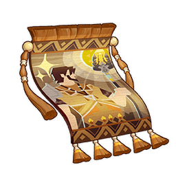

Natlan · Books & Literature
Sundjatta's First Foray
This three-volume Children of Echoes scroll follows the legendary Sundjatta from uncertain origins to a dragon-slaying feat at a lava lake.

A Children of Echoes Story Scroll
Sundjatta’s First Foray is a three-volume Natlan book collection presented as a woven scroll passed down through generations. Its opening names Djeli Mamoudou of the Children of Echoes as the singer telling the tale. That makes him the stated narrator; the text does not establish a separate, modern author or verify the episodes as historical events.
The story gives Sundjatta’s youth the shape of an epic: a hero with uncertain beginnings earns a name through a dangerous first feat. Read its people, genealogy, and dragon episode as the book’s own legendary tradition rather than a definitive chronology of Natlan.
Volume I: The Singer and the Hero
Djeli Mamoudou introduces himself as a singer and herald of the Children of Echoes, tracing a lineage of storytellers through earlier names. He then invokes the many names attached to the hero—Magan Sundjatta, Mali Djata, Sogolon Djata, and Nare Magan Djata—and recounts a sweeping cycle of conquest, enemies who later become allies, and victory over a dark army.
The volume establishes the oral-epic voice and its claim to preserve communal memory. Its grand genealogies and heroic scope are part of the performance; the book gives no independent evidence that this is a literal record of Natlan’s past.
Volume II: An Uncertain Birth and a Departure
The singer refuses to settle Sundjatta’s parentage or tribe: the old accounts have faded and disagree. The volume instead tells of his birth under auspicious stars and of Mbande, a woman chief associated with mines and precious stones, who recognizes him as a possible tribal hero. Sundjatta becomes a formidable miner.
After Mbande dies, Sundjatta leaves on the night when a new chief is to be chosen, seeking proof worthy of the name he hopes to earn. His departure is misunderstood by his people as flight or betrayal. The scroll presents these details as competing strands of a legend, not a reliable genealogy.
Volume III: The Challenge at the Lava Lake
The final volume sends Sundjatta to a distant lava lake, where he confronts Lukwata, an ancient dragon hidden in a cave. Lukwata speaks of restoring dragon rule and lashes out in a venomous, fiery frenzy. Sundjatta survives the fight and kills the creature with a heavy mining hammer.
The tale closes with Sundjatta resting after the ordeal and finally having earned the heroic name that his people had withheld. It calls Lukwata an ancient dragon; it does not identify the creature as one of Teyvat’s named Dragon Sovereigns. The heroic combat belongs to this scroll’s legend.
This is an original CoreGG reading guide, not an official HoYoverse article or a reproduction of the game text. Source links below identify the records used so you can check the original context.
Sources & references
Check these sources for the original game text and reference trail.